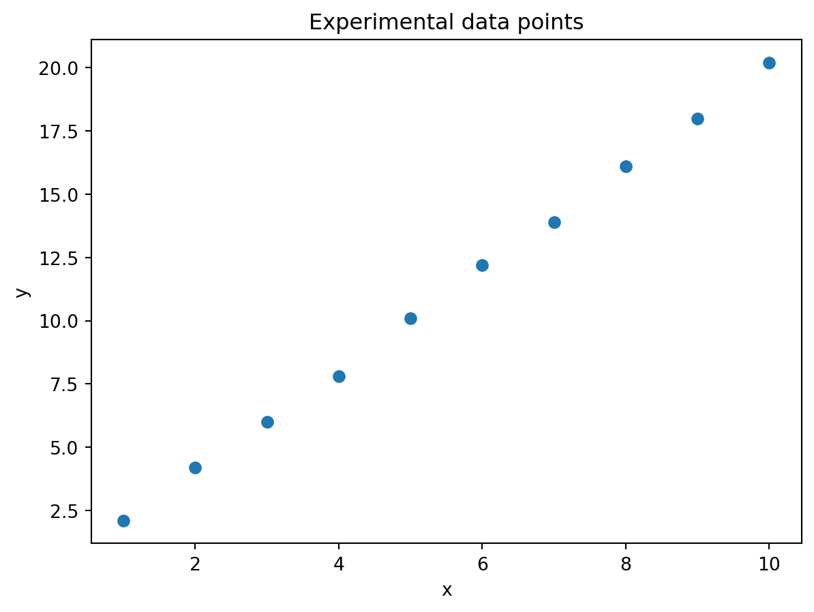
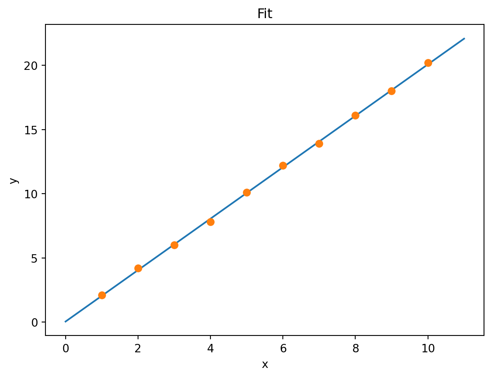
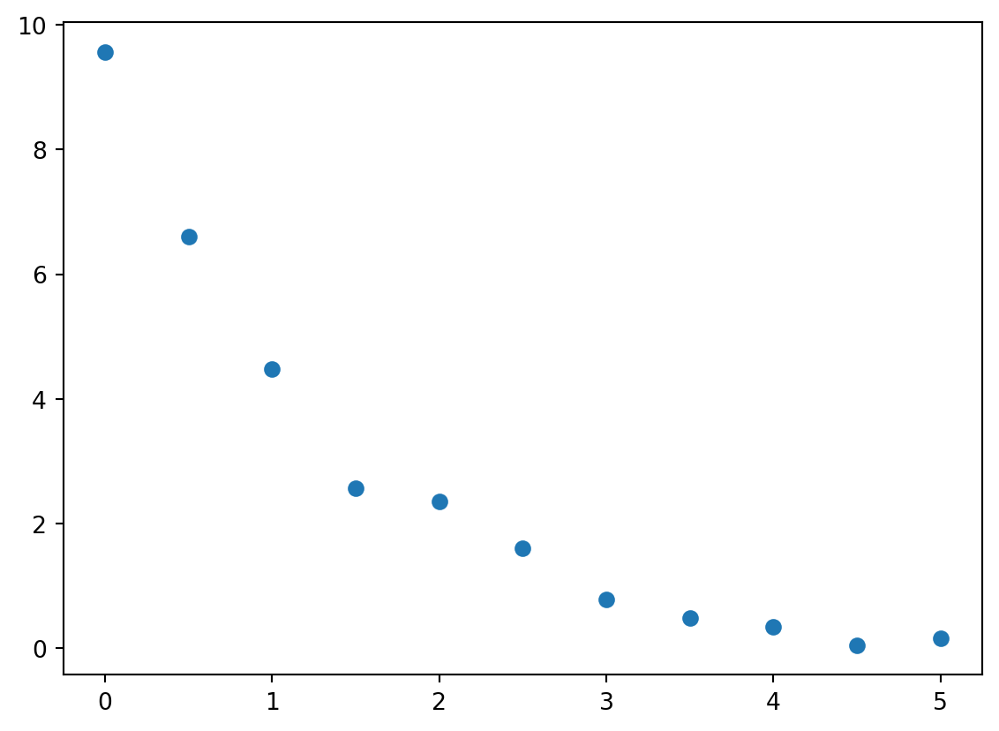
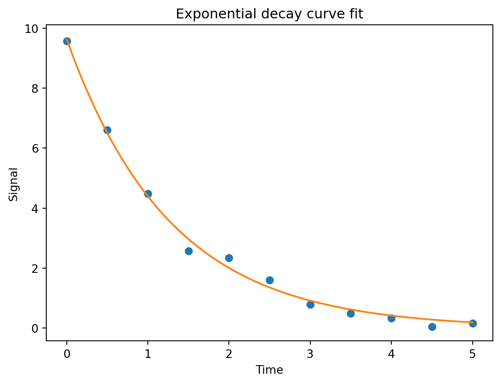
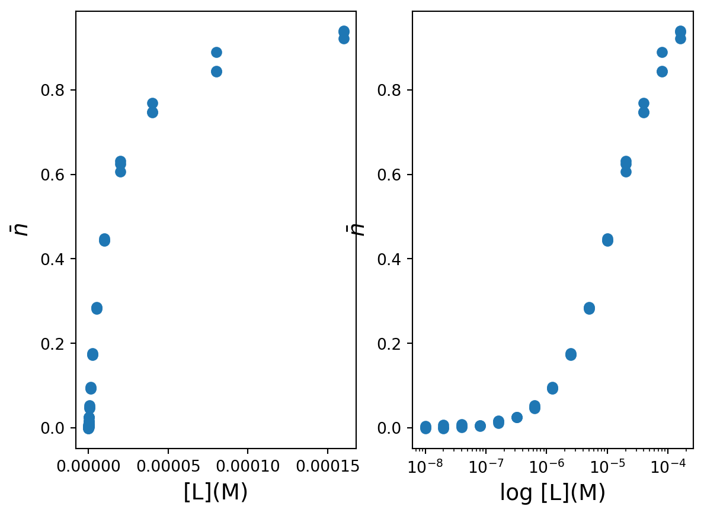
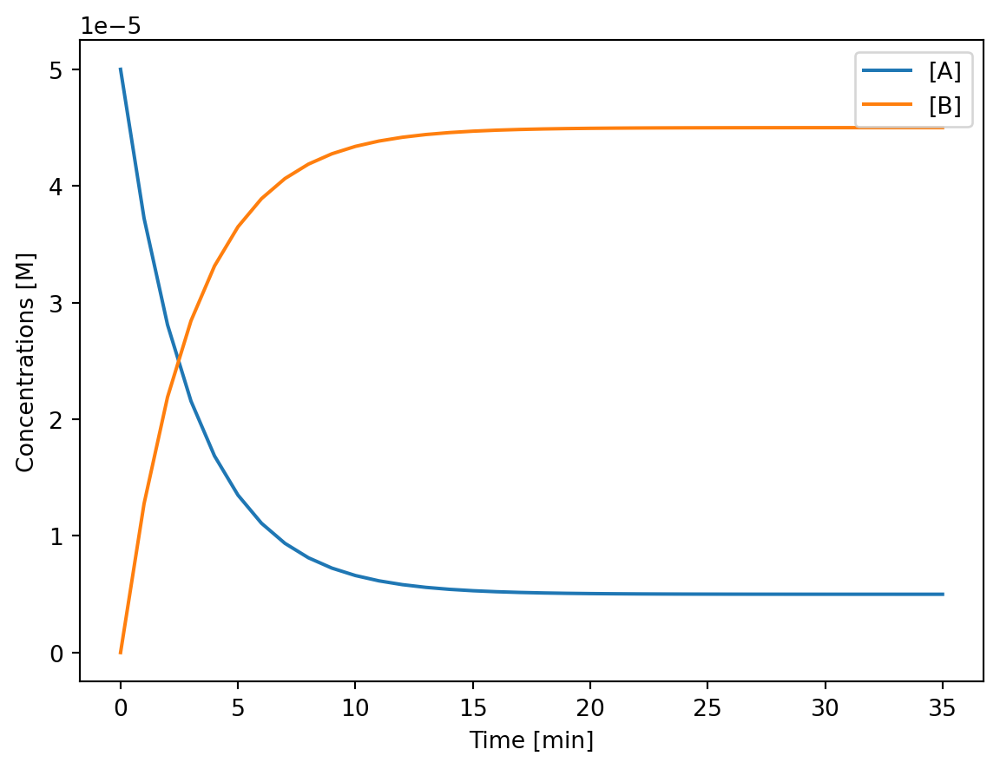
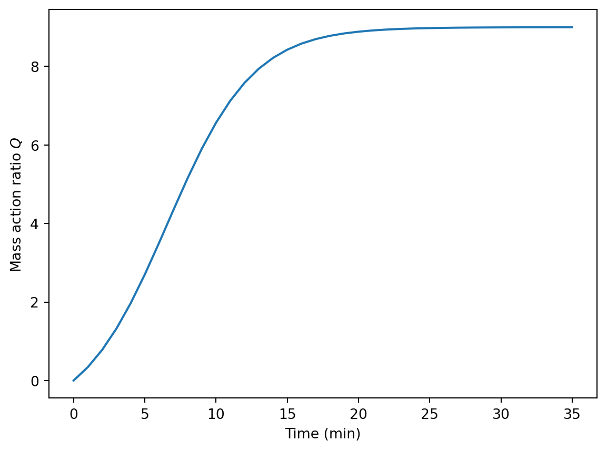
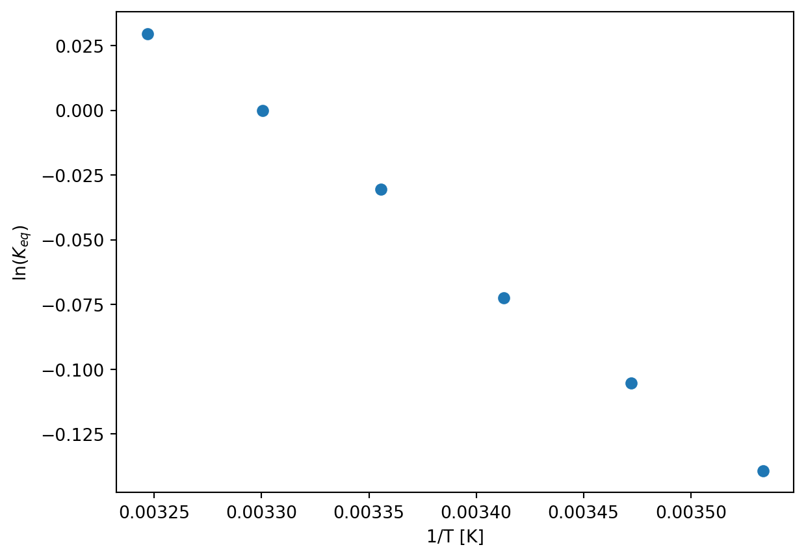
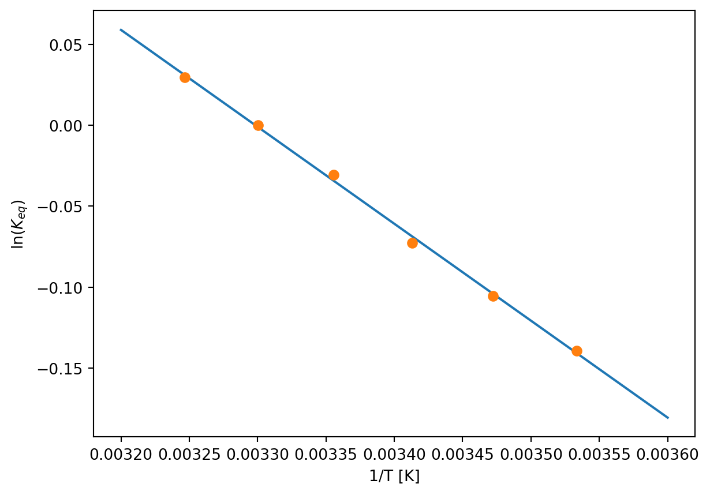

Code
try:
import fysisk_biokemi
print("Already installed")
except ImportError:
%pip install -q "fysisk_biokemi[colab] @ git+https://github.com/au-mbg/fysisk-biokemi.git#subdirectory=course-utils"try:
import fysisk_biokemi
print("Already installed")
except ImportError:
%pip install -q "fysisk_biokemi[colab] @ git+https://github.com/au-mbg/fysisk-biokemi.git#subdirectory=course-utils"import numpy as np
import matplotlib.pyplot as plt
from scipy.optimize import curve_fitCurve fitting is a fundamental skill in biochemistry and biophysics for analyzing experimental data. We use curve fitting to determine parameters in mathematical models that describe biological processes like enzyme kinetics, binding affinity, and reaction rates.
The basic idea is to find the parameters of a mathematical function that best describes our experimental data.
Real biochemical data is often requires complex fitting functions. Therefore, we will start out with a simpler data that follows a linear relationship. The data below represents a theoretical experiment where we measure some output \(y\) at different input values \(x\):
## This makes two arrays (columns) ##
## One with the x coordinates ##
## One with the y coordinates ##
x_data = np.array([1, 2, 3, 4, 5, 6, 7, 8, 9, 10])
y_data = np.array([2.1, 4.2, 6.0, 7.8, 10.1, 12.2, 13.9, 16.1, 18.0, 20.2])The functions above simply make two arrays - i.e. columns of data - containing the number. You can view the content of these colmns by with print(x_data) or print(y_data).
# Plot the data
fig, ax = plt.subplots()
## Your task: Plot the data as a scatter plot! ##
## Recall that you can do this with: ax.plot(x_data, y_data, 'o')
ax.plot(x_data, y_data, 'o')
## EXTRAS - You do not need to read or understand ##
## Adding customization ##
ax.set_xlabel('x')
ax.set_ylabel('y')
ax.set_title('Experimental data points');
Looking at this data, we can see it roughly follows a straight line. Let’s assume our model is:
\[y = ax + b\]
where \(a\) and \(b\) are parameters we want to determine from the data.
To use scipy.optimize.curve_fit, we need to define a function where:
Define a linear function for fitting:
def linear_function(x, a, b):
## Your task: Calculate the linear function ##
result = a * x + b
return resultAlways a good idea to check that your function works as expected
As a test we are adding 1 in the place of x, 2 in the place of a and 0 in the place of b. In other words: \(1 \cdot 2 + 0 = 2\)
linear_function(1, 2, 0) # Should give 2When in doubt it is a good idea to do sanity checks like this.
Now we can use curve_fit to find the best parameters. The basic syntax is:
fitted_parameters, trash = curve_fit(function, x_data, y_data, p0=initial_guess)Where:
function: The function we defined abovex_data, y_data: Our experimental datap0: Initial guess for parameters (optional but recommended)fitted_parameters: The optimized parameters (what we want!)trash: Don’t worry about this.Finish the cell below to perform the curve fit by adding the three missing arguments to the call to curve_fit.
# Initial guess: a=2, b=0
initial_guess = [2, 0]
# Perform the fit
fitted_parameters, trash = curve_fit(linear_function, x_data, y_data, p0=initial_guess)
# Extract parameters
a_fit, b_fit = fitted_parameters
print(fitted_parameters)
print(a_fit)
print(b_fit)[2.00242424 0.04666667]
2.0024242424242424
0.04666666666666669It’s crucial to always plot your fit to see how well it describes the data. To do this we evaluate the function with the fitted parameters and a densely sampled independent variable.
x_smooth = np.linspace(0, 11, 100) # Makes 100 equally spaced points between 0 and 11.
y_fit = linear_function(x_smooth, a_fit, b_fit) # Call the linear function using x_smooth, a_fit and b_fitThen we can plot it
fig, ax = plt.subplots()
## Your task: Plot the fitted function using x_smooth and y_fit ##
ax.plot(x_smooth, y_fit)
## Plots the experimental data ##
ax.plot(x_data, y_data, 'o')
## EXTRA ##
## You do not need to understand this ##
## Customizes the plot ##
ax.set_xlabel('x')
ax.set_ylabel('y')
ax.set_title('Fit')Text(0.5, 1.0, 'Fit')
Many biological processes follow nonlinear relationships. Let’s work with exponential decay, which is common in biochemistry (e.g., radioactive decay or unimolecular chemical reactions).
You can load the dataset from the exp_decay_data.xlsx-file with the widget below
from fysisk_biokemi.widgets import DataUploader
from IPython.display import display
uploader = DataUploader()
uploader.display()Run the next cell after uploading the file
df = uploader.get_dataframe()
display(df)from IPython.display import display
from fysisk_biokemi.datasets import load_dataset
df = load_dataset('exp_decay_data')
display(df)| time | signal | |
|---|---|---|
| 0 | 0.0 | 9.571655 |
| 1 | 0.5 | 6.606815 |
| 2 | 1.0 | 4.472434 |
| 3 | 1.5 | 2.568079 |
| 4 | 2.0 | 2.346060 |
| 5 | 2.5 | 1.606339 |
| 6 | 3.0 | 0.783575 |
| 7 | 3.5 | 0.484774 |
| 8 | 4.0 | 0.332479 |
| 9 | 4.5 | 0.047604 |
| 10 | 5.0 | 0.158024 |
Now make a plot of the data
## Your task: Plot the data from the dataframe ´df´. ##
## Recall that your get the time-column as df['time'] ##
## Similarly you get the signal-column as df['signal'] ##
fig, ax = plt.subplots()
ax.plot(df['time'], df['signal'], 'o')
The model we want to fit is: \[\text{signal} = A e^{-kt}\]
Define the exponential decay function:
def exponential_decay(t, A, k):
## Your task: Calculate the exponential function ##
## Remember that np.exp calculates the exponential function ##
result = A * np.exp(-k * t)
return result
## This calculates the function for t=1, A=1, k=1 ##
## If you did it correctly you should see 0.3678... ##
test_result = exponential_decay(1, 1, 1)
print(test_result)0.36787944117144233Now fit the exponential function to the data:
# Initial guess: A=8, k=1
initial_guess = [8, 1]
# Perform the fit
fitted_parameters, trash = curve_fit(exponential_decay, df['time'], df['signal'], p0=initial_guess)
# Extract parameters
A_fit, k_fit = fitted_parameters
print(A_fit)
print(k_fit)9.62793647063459
0.7845023303693237Again we should plot to check that it looks as expected
## This makes 100 linearly spaced points between 0 and 5 ##
t_smooth = np.linspace(0, 5, 100)
## Your task: Calculate the function using the fitted parameters and t_smooth ##
signal_fit = exponential_decay(t_smooth, A_fit, k_fit)Now we can plot the fit along with the data.
fig, ax = plt.subplots()
## Your task: Plot the observations - you can copy this line from the ##
## previous plot. ##
ax.plot(df['time'], df['signal'], 'o')
## Your task: Plot the fit using t_smooth and signal_fit
ax.plot(t_smooth, signal_fit)
## EXTRA - You do not need to understand this ##
## This adds customization ##
ax.set_xlabel('Time')
ax.set_ylabel('Signal')
ax.set_title('Exponential decay curve fit')
plt.show()
curve_fit
Fitting refers to finding the parameters that make an assumed functional form best ‘fit’ the data.
In Python we will use the curve_fit from the scipy package to do so. The function looks like this
curve_fit(function,
x_data,
y_data,
p0=[param_1, param_2, ...])The arguments are
function: A python function where the first argument is the independent variable (typically the x coordinate), and other arguments are the parameters of the functions.x_data: The observed values of the independent variable (The x coordinates).y_data: The observed values of the dependent variable (The y coordinates) .p0: Initial guesses for the parameters.When called curve_fit starts by calculating how well the functions fits the data with the initial parameters in p0 and then iteratively improves the fit by trying new values for the parameters in an intelligent way.
The found parameters will generally depend on p0 and it is therefore necessary to provide a good (or good enough) guess for p0.
Generally, the best way to learn more about a function is to read it’s documentation and then play around with it. The documentation is in this case on the SciPy website. You don’t need to read it, unless you want more details.
You now have the fundamental skills needed to fit curves to biochemical data! In the exercises, you’ll apply these techniques to analyze real experimental data and extract meaningful biological parameters.
Train your estimation skills using the widget below.
from fysisk_biokemi.widgets.utils.colab import enable_custom_widget_colab
from fysisk_biokemi.widgets import estimate_kd
enable_custom_widget_colab()
estimate_kd()The widget below shows the curves for \(\theta\) using both the simple expression assuming that \(L = L_{tot}\) and the quadratic binding expression. Vary \(K_D\) and \(P_{total}\) to work out a rule of thumb for when the two equations give a similar curve.
from fysisk_biokemi.widgets.utils.colab import enable_custom_widget_colab
from fysisk_biokemi.widgets import visualize_simple_vs_quadratic
enable_custom_widget_colab()
visualize_simple_vs_quadratic()answer = "They are equal when P_tot << K_D"import numpy as np
import matplotlib.pyplot as plt
import pandas as pd
pd.set_option('display.max_rows', 6)A dialysis experiment was set up where equal amounts of a protein were separately dialyzing against buffers containing different concentrations of a ligand – each measurement was done in triplicate. The average number of ligands bound per protein molecule, \(\bar{n}\) were obtained from these experiments. The corresponding concentrations of free ligand and values are given in dataset dialys-exper.xlsx.
from fysisk_biokemi.widgets import DataUploader
from IPython.display import display
uploader = DataUploader()
uploader.display()Run the next cell after uploading the file
df = uploader.get_dataframe()
display(df)from IPython.display import display
from fysisk_biokemi.datasets import load_dataset
df = load_dataset('dialysis_experiment') # Load from package for the solution so it doesn't require to interact.
display(df)| Free_ligand_(uM) | n_bar | |
|---|---|---|
| 0 | 0.01 | 0.0059 |
| 1 | 0.01 | 0.0059 |
| 2 | 0.01 | 0.0060 |
| ... | ... | ... |
| 39 | 80.00 | 1.8769 |
| 40 | 80.00 | 1.9631 |
| 41 | 80.00 | 1.8930 |
42 rows × 2 columns
Explain how the values of \(\bar{n}\) is calculated when knowing the concentrations of ligand inside and outside the dialysis bag, as well as the total concentration of the protein, [\(\text{P}_{\text{tot}}\)].
The concentration of free ligand [L] is the same inside and outside the dialysis bag at equilibrium. Outside there is no protein, so only free ligand \(L_{outside} = [L]\)
The total concentration of ligand inside the dialysis bag is thus the combination of free and bound ligand \(L_{inside} = [L] + [PL]\). [PL] can thus be calculated as:
\[[PL] = [L_{inside}] - [L_{outside}]\]
This can be combined with \([P_{tot}]\) to give \(\bar{n}\):
\[\bar{n} = \frac{[L_{inside}] - [L_{outside}]}{[P_{tot}]}\]
Convert the concentrations of free ligand to SI-units given in M, add it as a row to the DataFrame.
df['Free_ligand_(M)'] = df['Free_ligand_(uM)'] * 10**(-6)
display(df)| Free_ligand_(uM) | n_bar | Free_ligand_(M) | |
|---|---|---|---|
| 0 | 0.01 | 0.0059 | 1.000000e-08 |
| 1 | 0.01 | 0.0059 | 1.000000e-08 |
| 2 | 0.01 | 0.0060 | 1.000000e-08 |
| ... | ... | ... | ... |
| 39 | 80.00 | 1.8769 | 8.000000e-05 |
| 40 | 80.00 | 1.9631 | 8.000000e-05 |
| 41 | 80.00 | 1.8930 | 8.000000e-05 |
42 rows × 3 columns
fig, ax = plt.subplots()
## Your task: Plot the raw data
## With the ligand concentration df['Free_ligand_(M)'] on the x-axis
## And with n-bar df['n_bar'] on the y-axis.
ax.plot(df['Free_ligand_(M)'], df['n_bar'], 'o')
## EXTRAS: You do not need to understand this ##
## This adds customization ##
ax.set_xlabel('Free ligand [L] (M)', fontsize=16)
ax.set_ylabel(r'$\bar{n}$', fontsize=16);
Now we want to fit the data to extract \(K_D\) and \(n\), by using the equation
\[ \bar{n}([L_{\text{free}}]) = N \frac{[L_{\text{free}}]}{K_D + [L_{\text{free}}]} \]
To do so we need to implmenet it as a Python function
def nbar(L, N, K_D):
return N * L / (K_D + L)
## This calculates the function and prints for two different sets of values ##
print(nbar(1, 1, 1)) # Should give 1/2
print(nbar(21, 47, 2.5)) # Should give 420.5
42.0Finish the code to perform the fitting in the cell below.
from scipy.optimize import curve_fit
# Choose the variables from the dataframe
x = df['Free_ligand_(M)']
y = df['n_bar']
## Your task: Make initial guesses for the two parameters ##
K_D_guess = 10**(-5)
N_guess = 1
initial_guess = [K_D_guess, N_guess]
## Your task: Give the four arguments in the correct order to make calculate ##
## the fitted parameters ##
fitted_parameters, pcov = curve_fit(nbar, x, y, initial_guess)
# Print the parameters
N_fit, K_D_fit = fitted_parameters
print(fitted_parameters)
print(N_fit)
print(K_D_fit)[2.00882847e+00 3.39599709e-06]
2.008828473002213
3.3959970874778938e-06Are the parameters you find reasonable? How can you tell if they are reasonable by looking at the plot you made earlier?
When we have the fitted parameters we can calculate and plot the function. To do so we make an array of values for the independent variable and use our function to calculate the dependent variable
## This makes 50 equally spaced points ##
L_smooth = np.linspace(0, x.max()*1.2, 50)
## Your task: Calculate the fitted function using the found parameters and L_smooth
nbar_calc = nbar(L_smooth, N_fit, K_D_fit)Now that we calculated the dependent variable we can plot the fit along with the data.
fig, ax = plt.subplots()
## Your task: Plot the fitted function ##
ax.plot(L_smooth, nbar_calc)
## Plots the data ##
ax.plot(df['Free_ligand_(M)'], df['n_bar'], 'o')
## EXTRA: You do not need to understand this ##
## This customizes the plot ##
## It also adds lines indicating the values of n and K_D found ##
ax.axhline(N_fit, color='red', label=r'$N$')
ax.axvline(K_D_fit, color='green', label=r'$K_D$')
ax.set_xlabel('Free ligand [L] (M)', fontsize=16)
ax.set_ylabel(r'$\bar{n}$', fontsize=16)
ax.legend(fontsize=16)
import numpy as np
import pandas as pd
from fysisk_biokemi.widgets import DataUploader
from IPython.display import display
import matplotlib.pyplot as plt
from scipy.optimize import curve_fit
pd.set_option('display.max_rows', 6)The inter-bindin-data.xlsx contains a protein binding dataset.
Load the dataset using the widget below
uploader = DataUploader()
uploader.display()Run the next cell after uploading the file
df = uploader.get_dataframe()
display(df)from IPython.display import display
from fysisk_biokemi.datasets import load_dataset
df = load_dataset('interpret_week48') # Load from package for the solution so it doesn't require to interact.
display(df)| [L]_(uM) | nbar | |
|---|---|---|
| 0 | 0.01 | -0.001897 |
| 1 | 0.01 | 0.001821 |
| 2 | 0.01 | 0.003624 |
| ... | ... | ... |
| 42 | 160.00 | 0.939608 |
| 43 | 160.00 | 0.937402 |
| 44 | 160.00 | 0.921801 |
45 rows × 2 columns
Add a new column to the DataFrame with the ligand concentration in SI units.
## Your task: Add a column with the concentration in M ##
## Call this column df['[L]_(M)'] ##
## Recall that you can say df['[L]_(M)'] = df["[L]_(uM)"] * XXX ##
## Where XXX is the factor to multiply by. ##
df['[L]_(M)'] = df["[L]_(uM)"] * 10**(-6)
display(df)| [L]_(uM) | nbar | [L]_(M) | |
|---|---|---|---|
| 0 | 0.01 | -0.001897 | 1.000000e-08 |
| 1 | 0.01 | 0.001821 | 1.000000e-08 |
| 2 | 0.01 | 0.003624 | 1.000000e-08 |
| ... | ... | ... | ... |
| 42 | 160.00 | 0.939608 | 1.600000e-04 |
| 43 | 160.00 | 0.937402 | 1.600000e-04 |
| 44 | 160.00 | 0.921801 | 1.600000e-04 |
45 rows × 3 columns
Make plots of the binding data directly with a linear and logarithmic x-axis.
Estimate \(K_D\) by visual inspection of these plots!
# This makes a figure with two axes.
fig, axes = plt.subplots(1, 2)
## We index with [0] to plot in the first axis. ##
## Don't worry about remembering this ##
ax = axes[0]
ax.plot(df['[L]_(M)'], df['nbar'], 'o')
## We index with [1] to plot in the first axis. ##
## Don't worry about remembering this ##
## We will make this a log plot ##
ax = axes[1]
## Your task: Plot the data [L]_(M) vs nbar.
## Same exact code as above
ax = axes[1]
ax.plot(df['[L]_(M)'], df['nbar'], 'o')
ax.set_xscale('log')
## EXTRA: You do not need to understand this ##
## Customization: Adds labels for the axis in both plots.
ax = axes[0]
ax.set_xlabel('[L](M)', fontsize=14)
ax.set_ylabel(r'$\bar{n}$', fontsize=14)
ax = axes[1]
ax.set_xlabel('log [L](M)', fontsize=14)
ax.set_ylabel(r'$\bar{n}$', fontsize=14)Text(0, 0.5, '$\\bar{n}$')
Ths command ax.set_xscale('log') tells matplotlib that we want the x-axis to use a log-scale.
K_D_estimate = 5 * 10**(-5)Make a fit to determine \(K_D\), as always we start by implementing the function to fit with
def n_bar(L, K_D):
## Your task: Implement the function to fit with
## Use your biochemical knowledge to decide which function that is.
return L / (L + K_D)And then we can make the fit
## Your task: Choose the variables from the dataframe ##
x = df['[L]_(M)']
y = df['nbar']
# Initial guess
initial_guess = [K_D_estimate]
## Your task: Finish the curve fitting
fitted_parameters, trash = curve_fit(n_bar, x, y, initial_guess)
# Print the parameters
K_D_fit = fitted_parameters[0]
print(K_D_fit)1.2457934647913883e-05Compare the fitted values with your guess.
## These lines make equally spaced points on a normal linear axis ##
## And on a logarithmic axis. ##
L_smooth = np.linspace(0, df['[L]_(M)'].max(), 100)
L_smooth_log = np.geomspace(df['[L]_(M)'].min(), df['[L]_(M)'].max(), 100)
## Youe task: Evaluate the fitted function with L_smooth and L_smooth_log ##
nbar_fit = n_bar(L_smooth, K_D_fit)
nbar_fit_log = n_bar(L_smooth_log, K_D_fit)Now we can make a plot.
# This makes a figure with two axes.
fig, axes = plt.subplots(1, 2, figsize=(9, 4))
# Index with [0] to plot in the first axis - Linear plot
ax = axes[0]
ax.plot(df['[L]_(M)'], df['nbar'], 'o', color='C0')
ax.plot(L_smooth, nbar_fit, color='C2')
ax.axvline(K_D_estimate, label='Estimate', color='C1')
ax.axvline(K_D_fit, label='Fit', color='C2')
ax.set_xlabel('[L](M)', fontsize=14)
ax.set_ylabel(r'$\bar{n}$', fontsize=14)
ax.legend()
# Index with [1] to plot in the second axis - Log plot.
ax = axes[1]
ax.plot(df['[L]_(M)'], df['nbar'], 'o', color='C0')
ax.plot(L_smooth_log, nbar_fit_log, color='C2')
ax.set_xlabel('[L](M)', fontsize=14)
ax.set_ylabel(r'$\bar{n}$', fontsize=14)
ax.axvline(K_D_estimate, label='Estimate', color='C1')
ax.axvline(K_D_fit, label='Fit', color='C2')
ax.legend()
ax.set_xscale('log')
Based on the value of \(K_D\) found from the fit,
"""
At K_D/9 and 9*K_D.
"""import matplotlib.pyplot as plt
import numpy as np
from fysisk_biokemi.widgets import DataUploader
from IPython.display import display
from scipy.optimize import curve_fitThe binding of NAD+ to the protein yeast glyceraldehyde 3-phosphate dehydrogenase (GAPDH) was studied using equilibrium dialysis. The enzyme concentration was 71 μM. The concentration of \([\text{NAD}^{+}_\text{free}]\) and the corresponding values of \(\bar{n}\) were determined with the resulting data found in the dataset deter-type-streng-coope.xlsx.
The dataset consists of three independent repititions of the same experiment.
Load the dataset using the widget below
uploader = DataUploader()
uploader.display()Run the next cell after uploading the file
df = uploader.get_dataframe()
display(df)from fysisk_biokemi.datasets import load_dataset
df = load_dataset('determination_coop_week48') # Load from package for the solution so it doesn't require to interact.
display(df)| [NAD+free]_(uM) | nbar1 | nbar2 | nbar3 | |
|---|---|---|---|---|
| 0 | 10 | 0.250 | 0.261 | 0.243 |
| 1 | 13 | 0.394 | 0.389 | 0.379 |
| 2 | 21 | 0.802 | 0.801 | 0.797 |
| ... | ... | ... | ... | ... |
| 6 | 68 | 3.056 | 3.020 | 3.091 |
| 7 | 125 | 3.507 | 3.543 | 3.522 |
| 8 | 211 | 3.704 | 3.741 | 3.699 |
9 rows × 4 columns
Start by adding a new column to the DataFrame with the average value of \(\bar{n}\) across the three series
Remember that you can set a new column based on a computation using one or more other columns, e.g.
df['new_col'] = df['col1'] + df['col2']## Your task: Calculate the of the values in the three columns ##
## nbar1, nbar2, nbar3 ##
df['nbar_avg'] = (df['nbar1'] + df['nbar2'] + df['nbar3']) / 3Now also add a column with the ligand concentration in SI units with the column-name [NAD+free]_(M).
## Task: Calculate the ligand concentration in M and ##
## set it as a new column with the name '[NAD+free]_(M)'
df['[NAD+free]_(M)'] = df['[NAD+free]_(uM)'] * 10**(-6)
display(df)| [NAD+free]_(uM) | nbar1 | nbar2 | nbar3 | nbar_avg | [NAD+free]_(M) | |
|---|---|---|---|---|---|---|
| 0 | 10 | 0.250 | 0.261 | 0.243 | 0.251333 | 0.000010 |
| 1 | 13 | 0.394 | 0.389 | 0.379 | 0.387333 | 0.000013 |
| 2 | 21 | 0.802 | 0.801 | 0.797 | 0.800000 | 0.000021 |
| ... | ... | ... | ... | ... | ... | ... |
| 6 | 68 | 3.056 | 3.020 | 3.091 | 3.055667 | 0.000068 |
| 7 | 125 | 3.507 | 3.543 | 3.522 | 3.524000 | 0.000125 |
| 8 | 211 | 3.704 | 3.741 | 3.699 | 3.714667 | 0.000211 |
9 rows × 6 columns
Finally, set the concentration of the GADPH in SI units
## Task: Convert the GADPH concentration to M ##
## Set it to the variable c_gadph ##
## Add a comment about the unit ##
c_gadph = 71 * 10**(-6) # MMake a plot of the average \(\bar{n}\) as a function of \([\text{NAD}^{+}_\text{free}]\).
fig, ax = plt.subplots()
## Your task: Add plot of nbar vs [NAD+_free]_(M)
ax.plot(df['[NAD+free]_(M)'], df['nbar_avg'], 'o')
## EXTRA: You don't need to understand this
## Customization
ax.set_xlabel(r'$[\text{NAD}^{+}_\text{free}]$', fontsize=14)
ax.set_ylabel(r'$\bar{n}$', fontsize=14)
plt.show()
Make a Scatchard plot based on the average \(\bar{n}\).
# Your task: Calculate nbar / L
nbar_over_L = df['nbar_avg'] / df['[NAD+free]_(M)']
fig, ax = plt.subplots()
# Your task: Choose the right things to make a Scatchard plot.
ax.plot(df['nbar_avg'], nbar_over_L, 'o')
## EXTRA: You dont need to understand this.
## Adds customization.
ax.set_xlabel(r'$\bar{n}$', fontsize=14)
ax.set_ylabel(r'$\bar{n}/L$', fontsize=14)
ax.set_xlim([0, df['nbar_avg'].max()*1.2])
ax.set_ylim([0, nbar_over_L.max() * 1.2])
Estimate by eye how many bindings sites GAPDH contains for \(\text{NAD}^{+}\)?
"""
Saturation suggest assumptotic approximation to 4, which seems like the like
intercept of the non-linear scatchard plot.
"""Based on a visual inspection of the plot above, are there in signs of cooperativity? If so, which kind?
"""
Positive cooperativity as witnessed e.g. by the increasing slope in the early
part of the lienar plot
"""Make a fit using the functional form
\[ \bar{n} = N \frac{[L]^h}{K + [L]^h} \]
As usual, start by defining the function in Python
def n_bar(L, N, K, h):
## Your task: Implement the function
# Be careful with parentheses!
result = N * L**h / (K + L**h)
return resultNow we can fit
## We want to use all the data for the fit, but it was given in three different columns.
## We stitch it together to make a column containing all x-coordinates
## And another column containing all y-coordinates
x = np.concatenate([df['[NAD+free]_(M)'], df['[NAD+free]_(M)'], df['[NAD+free]_(M)']])
y = np.concatenate([df['nbar1'], df['nbar2'], df['nbar3']])
## Your task: Make initial guesses for the three parameters
## The order is that of the function
## So N, K and h.
initial_guess = [1, 1, 1]
## Your task: Make the fit
## Note: The bounds argument has been added to have the function
## only explore positive sets of parameters.
fitted_parameters, trash = curve_fit(n_bar, x, y, initial_guess, bounds=(0, np.inf))
# Print the parameters
N_fit, K_fit, h_fit = fitted_parameters
print('N_fit', N_fit)
print('K_fit', K_fit)
print('h_fit', h_fit)N_fit 3.9989653129692453
K_fit 6.077039821092879e-09
h_fit 1.861181919789234Do the fitted parameters support your intuitive reading of the type of cooperativity?
In the data sets used, repeated experiments were given as a three seperate columns, which is a quite natural way of recording data during an experiment. However, it is not an appropriate format for regression, where we want all the data-points in a single column. In this exercise we did a bit of data wrangling to make the data appropriate for what we want to do with it - in this case by creating a new joint column containing all the data by using the np.concatenate function.
Below is given the general expression for saturation of a binding site by one of the ligands, \(L\), when two ligands \(L\) and \(C\) are competing for binding to the same site on a protein. Assume that \([P_T] = 10^{-9}\) \(\mathrm{M}\).
\[ \theta_L = \frac{[PL]}{[P_T]} = \frac{1}{\frac{K_D}{[L]}\left(1 + \frac{[C]}{K_C}\right) + 1} \]
Consider these four situations
| # | \([L_T]\) | \([C_T]\) | \(K_D\) | \(K_C\) |
|---|---|---|---|---|
| 1 | \(1·10^{-3}\) \(\mathrm{M}\) | \(0\) | \(1·10^{-5}\) \(\mathrm{M}\) | \(1·10^{-6}\) \(\mathrm{M}\) |
| 2 | \(1·10^{-3}\) \(\mathrm{M}\) | \(1·10^{-2}\) \(\mathrm{M}\) | \(1·10^{-5}\) \(\mathrm{M}\) | \(1·10^{-6}\) \(\mathrm{M}\) |
| 3 | \(1·10^{-3}\) \(\mathrm{M}\) | \(1·10^{-3}\) \(\mathrm{M}\) | \(1·10^{-5}\) \(\mathrm{M}\) | \(1·10^{-5}\) \(\mathrm{M}\) |
| 4 | \(1·10^{-5}\) \(\mathrm{M}\) | \(1·10^{-6}\) \(\mathrm{M}\) | \(1·10^{-5}\) \(\mathrm{M}\) | \(1·10^{-6}\) \(\mathrm{M}\) |
Explain how the fact that \([P_T]\) is much smaller than \([L_T]\) and \([C_T]\) simplifies the calculations using the above equation.
"""
When P(total) is << L(total) and C(total), we can assume that L(total) =[L] and C(total) = [C].
"""Calculate the degree of saturation of the protein with ligand \(L\) in the four situations.
Start by writing a Python function that calculates the degree of saturation \(\theta\).
def bound_fraction(L, C, Kd, Kc):
## Your task: Write the equation for binding saturation.
## Be careful with parentheses!
theta = 1 / ((Kd / L)*(1+(C/Kc))+1)
return thetaThen use that function to calculate \(\theta_L\) for each situation.
## Your task: Calculate the degree of saturation for each set of parameters ##
theta_L_1 = bound_fraction(10**(-3), 0, 10**(-5), 10**(-18))
theta_L_2 = bound_fraction(10**(-3), 10**(-2), 10**(-5), 10**(-6))
theta_L_3 = bound_fraction(10**(-3), 10**(-3), 10**(-5), 10**(-5))
theta_L_4 = bound_fraction(10**(-5), 10**(-6), 10**(-5), 10**(-6))
## Prints the results so we can analyze them.
print('Situation 1', theta_L_1)
print('Situation 2', theta_L_2)
print('Situation 3', theta_L_3)
print('Situation 4', theta_L_4)Situation 1 0.9900990099009901
Situation 2 0.0099000099000099
Situation 3 0.49751243781094534
Situation 4 0.3333333333333333What is the degree of saturation with respect to the competitor \(C\) in #1, #2, #3 and #4?
## Your task: Calculate the degree of saturation for each set of parameters ##
## Note: Now you are calculating it for the competitor!
theta_C_1 = 0 # [C] = 0
theta_C_2 = bound_fraction(10**(-2), 10**(-3), 10**(-6), 10**(-5))
theta_C_3 = bound_fraction(10**(-3), 10**(-3), 10**(-5), 10**(-5))
theta_C_4 = bound_fraction(10**(-6), 10**(-5), 10**(-6), 10**(-5))
## Prints the results so we can analyze them.
print('Situation 1', theta_C_1)
print('Situation 2', theta_C_2)
print('Situation 3', theta_C_3)
print('Situation 4', theta_C_4)Situation 1 0
Situation 2 0.99000099000099
Situation 3 0.49751243781094534
Situation 4 0.3333333333333333What is the fraction of \([P_{\mathrm{free}}]\) in #1, #2, #3 and #4?
Consider how to express the fraction of \([P_{\mathrm{free}}]\) in terms of theta_L_X and theta_C_X.
theta_free_1 = 1 - (theta_L_1 + theta_C_1)
theta_free_2 = 1 - (theta_L_2 + theta_C_2)
theta_free_3 = 1 - (theta_L_3 + theta_C_3)
theta_free_4 = 1 - (theta_L_4 + theta_C_4)
## Prints the results so we can analyze them.
print('Situation 1', theta_free_1)
print('Situation 2', theta_free_2)
print('Situation 3', theta_free_3)
print('Situation 4', theta_free_4)Situation 1 0.00990099009900991
Situation 2 9.900009900010165e-05
Situation 3 0.004975124378109319
Situation 4 0.33333333333333337Describe in your own words why these four competitive situations end up with their respective binding patterns. Consider the relative concentrations and affinities of ligands L and C.
"""
1. The competitor concentration is zero, so only the ligand L binds. Affinity/concentration is such that nearly all proteins have an L-ligand bound.
2. The affinity and concentration of C is higher so it binds more and the ratio of affinity and concentration is high enough that nearly all proteins have a C-ligand bound.
3. The affinity and concentration of L and C are equal and they both bind equally. Again, the affinities/concentrations are such that nearly all proteins have a ligand bound.
4. K_D > K_C with the same factor as [L_T] > [C_T] so they bind equally but
there are still free proteins as the concentrations are low relative to the affinities.
"""import matplotlib.pyplot as plt
import pandas as pd
from fysisk_biokemi.widgets import DataUploader
from IPython.display import display
pd.set_option('display.max_rows', 6)Consider the reaction:
\[ A \rightleftarrows B \]
The time course of the reaction was followed monitoring formation of the product \(B\). The starting concentration of \(A\) was 50 µM, and as you will learn later in the course, the reversible reaction going from \(A\) to \(B\) follows first order kinetics.
The data is contained in the diff_q_keq_data.xlsx file.
uploader = DataUploader()
uploader.display()Run the next cell after uploading the file
df = uploader.get_dataframe()
display(df)from fysisk_biokemi.datasets import load_dataset
df = load_dataset('diff_q_keq') # Load from package for the solution so it doesn't require to interact.
display(df)| Time_(min) | [B]_(uM) | |
|---|---|---|
| 0 | 0 | 0.000000 |
| 1 | 1 | 12.756091 |
| 2 | 2 | 21.896230 |
| ... | ... | ... |
| 33 | 33 | 44.999248 |
| 34 | 34 | 44.999461 |
| 35 | 35 | 44.999614 |
36 rows × 2 columns
Convert the measured concentrations of \(B\), \([B]\), to concentrations in the SI-unit \(\mathrm{M} \ (\mathrm{mol/L})\). Repeat for the starting concentration of \(A\), \([A_0]\).
## Your task: Convert the concentration of B to M and set in new column ##
df['[B]_(M)'] = df['[B]_(uM)'] * 10**(-6) # Unit: M
## Your task: Set the initial concentration of A, in the variable A0.
## Remember to convert to M.
A0 = 50 * 10**(-6) # Unit: M Use the laws of mass balance to calculate \([A]\) as a function of time in the unit \(\mathrm{M}\), add it as a column to the DataFrame
df['[A]_(M)'] = A0 - df['[B]_(M)']Make a plot of the time vs. the concentration of \(A\) and of time versus the concentration of \(B\).
fig, ax = plt.subplots()
## Your task: Plot time vs. concentrations.
ax.plot(df['Time_(min)'], df['[A]_(M)'], label='[A]') # Time vs. concentration of A
ax.plot(df['Time_(min)'], df['[B]_(M)'], label='[B]') # Time vs. concentration of B
## This shows the labels.
ax.legend()
## EXTRA: You do not need to understand this:
ax.set_xlabel('Time [min]')
ax.set_ylabel('Concentrations [M]')Text(0, 0.5, 'Concentrations [M]')
Calculate and plot the mass action ratio \(Q\) as a function of time.
## Your task: Calculate the mass action ratio
Q = df['[B]_(M)'] / df['[A]_(M)']Now plot the mass action ratio versus time.
fig, ax = plt.subplots()
## Your task: Make a plot of the axis from the dataframe df['Time_(min)'] vs Q
ax.plot(df['Time_(min)'], Q)
## EXTRA: You do not need to understand this
## Adds customization.
ax.set_xlabel('Time (min)')
ax.set_ylabel('Mass action ratio $Q$')Text(0, 0.5, 'Mass action ratio $Q$')
What is the difference between \(Q\) and \(K_{eq}\)?
"""
Q is the mass action ratio at any time throughout the reaction. Keq is the mass
action ratio at equilibrium only, and tells about the energetic favorisation of
one direction over the other.
"""Which of the two compounds \(A\) and \(B\) is favored at equilibrium? (Favored: highest concentration)
"""
When the reaction reaches close to equilibrium, more B is present as compared to A, telling that B is favored.
Keq > 1 --> B is favored
"""What is the equilibrium constant of this reaction?
"""
Can also just read the concentrations values at eq from the graph and calculate K_eq from those.
But it can of course also just be calculated.
"""
K_eq = df['[B]_(M)'][35] / df['[A]_(M)'][35]
print(K_eq)8.999228315035122import matplotlib.pyplot as plt
from scipy.optimize import curve_fit
import numpy as np
from fysisk_biokemi.widgets import DataUploader
from IPython.display import display The equilibrium constant for a reversible reaction going from \(A\) to \(B\) was measured as a function of temperature.
The data obtained is given in the Excel document deter_delta_h_data.xlsx - load the data with the widget
uploader = DataUploader()
uploader.display()Run the next cell after uploading the file
df = uploader.get_dataframe()
display(df)from fysisk_biokemi.datasets import load_dataset
df = load_dataset('deter_delta_h') # Load from package for the solution so it doesn't require to interact.
display(df)| T_(K) | Keq | |
|---|---|---|
| 0 | 283 | 0.87 |
| 1 | 288 | 0.90 |
| 2 | 293 | 0.93 |
| 3 | 298 | 0.97 |
| 4 | 303 | 1.00 |
| 5 | 308 | 1.03 |
In NumPy the np.log function calculates the natural logarithm that we often write as \(\ln\) and np.log10 calculates the base 10 logarithm.
Add new columns to the DataFrame containing \(\ln(K_{eq})\) and \(1/T\) and make a plot with \(1/T\) on the x-axis and \(\ln(K_{eq})\) on the y-axis.
## Your task: Add a column containing 1/T and one containing ln(Keq) ##
df['1/T'] = 1/df['T_(K)']
df['ln(Keq)'] = np.log(df['Keq'])Now you can make the plot in the cell below
fig, ax = plt.subplots()
## Your task: Make a plot of 1/T vs ln(Keq)
ax.plot(df['1/T'], df['ln(Keq)'], 'o')
## EXTRA: Customization you don't need to edit or understand this
## It adds axis labels to the plot you made.
ax.set_xlabel(r'1/T [K]')
ax.set_ylabel(r'$\ln(K_{eq})$');
Make a linear trendline by fitting a linear function to the data.
Start by defining a linear function
def vant_hoff(T, a, b):
## Your task: Implement a linear function
result = a * T + b
return resultNow we can use regression to find the parameters
## Your task: Make a fit with curve_fit to find the parameters ##
fitted_parameters, trash = curve_fit(vant_hoff, df['1/T'], df['ln(Keq)'])
a_fit, b_fit = fitted_parameters
## Print ##
print(a_fit)
print(b_fit)-599.0182388271635
1.975814074075527Then make a plot with the trendline added
fig, ax = plt.subplots()
## Your task: Choose points to evaluate the fit
## Look at the x-axis above and estimate a value for the minimum and maximum.
## Then calculate the fit at those points
max_x = 0.0032
min_x = 0.0036
T_trend = np.array([min_x, max_x])
y_fit = vant_hoff(T_trend, a_fit, b_fit)
## Your task: Plot the fit
ax.plot(T_trend, y_fit)
## Plots the data
ax.plot(df['1/T'], df['ln(Keq)'], 'o')
## EXTRA: You do not need to edit or understand this.
## It adds axis labels to the plot you made.
ax.set_xlabel('1/T [K]')
ax.set_ylabel(r'$\ln(K_{eq})$');
Calculate the reaction enthalpy and entropy, at \(T = 298 \ \mathrm{K}\), assuming that \(R = 8.314472 \times 10^{-3} \ \frac{\mathrm{kJ}}{\mathrm{mol}\cdot\mathrm{K}}\). Is the reaction endo- or exothermic?
## Your task: Set known values and add units as comments e.g. # kJ/(mol K) ##
R = 8.314472 * 10**(-3) # Unit: # kJ/(mol K)
T = 298 # Unit: K
## Your task: Calculate ΔH and ΔS ##
## Consider the units!
dH = -R * a_fit # kJ/mol
dS = R * b_fit # kJ/(mol K)
print(dH)
print(dS)4.980520374217764
0.016427850796106896The units of a slope is the units of the y-axis dvided by the units of the x-axis.
In the van’t Hoff plot the y-axis is unitless and the x-axis is in 1/K.
Calculate the free energy change, \(\Delta G^\circ\), at \(T = 298 \ \mathrm{K}\), assuming that \(R = 8.314472 \times 10^{-3} \ \frac{\mathrm{kJ}}{\mathrm{mol}\cdot\mathrm{K}}\)
## Your task: Calculate ΔG
dG = dH - T * dS
print(dG)0.08502083697790841import numpy as npBelow is shown the structure of ATP.
\(\Delta G^\circ\) for the hydrolysis of ATP to ADP and Pi is \(-30.5 \ \mathrm{kJ/mol}\).

In cells at \(298 \ \mathrm{K}\) the steady state concentrations of ATP, ADP og Pi resulted in a value for the reaction quotient \(Q = \frac{\mathrm{[ADP]}[\mathrm{Pi}]}{[\mathrm{ATP}]} = 0.002\). Calculate ΔG’ under these conditions.
## Your task: Define known values
## Add units as comments! E.g. # kJ / mol
Q = 0.002
T = 298 # K
dG_std = -30.5 # kJ / mol
R = 8.314 * 10**(-3) # kJ /(mol K)
## Your task: Calculate dG
dG = dG_std + R*T*np.log(Q)
print(dG)-45.89713901562406Assuming that the temperature within these cells is \(298 \ \mathrm{K}\), are these cells in equilibrium with respect to the hydrolysis of ATP?
K_eq = np.exp(-dG_std/(R*T))
print(K_eq)222001.499219259"""
Q is very different from this value, and therefore these cells are very far from
equilibrium with respect to hydrolysis of ATP. This value of Q further favors the
hydrolysis of ATP
"""Calculate the number of moles of ATP synthesized by a resting person in a period of 24 hours, assuming that the energy consumption by this person is \(8368 \ \mathrm{kJ}\) per 24 hours and that 40% of this energy is converted directly into ATP without loss of energy. Use the ΔG’ value calculated in question a, and assume that \(298 \ \mathrm{K}\).
# Your task: Set the known value of the energy spent for ATP.
energy_atp = 0.4 * 8368 # kJ
# Your task: Calculate the number of moles of ATP synthezied
synth_atp = energy_atp / np.absolute(dG)
print(synth_atp)72.92829295657326You can use np.absolute to calculate the absolute value of a number.
Next, calculate the average number of times each ATP molecule is turned over (synthesis followed by hydrolysis) in 24 hours when the total amount of ATP in the body equals \(0.2 \ \mathrm{mol}\).
## Your task: Set the known total_atp value
total_atp = 0.2 # Unit: mol
## Your task: Calculate the turnover number.
turn_over = synth_atp / total_atp # Unit mol/mol -> Unitless
print(turn_over)364.64146478286625